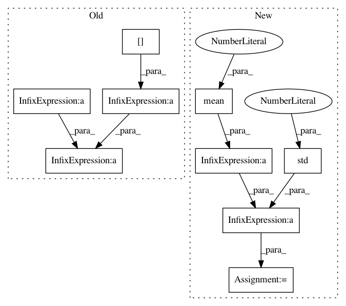

d3f12d1622f736e649fcec853044b05fe68e05ba,catalyst/rl/onpolicy/algorithms/ppo.py,PPO,postprocess_buffer,#PPO#Any#Any#,230
Before Change
def postprocess_buffer(self, buffers, len):
adv_centered = \
buffers["advantage"][:len] \
- buffers["advantage"][:len].mean(axis=0)
adv_std = buffers["advantage"][:len].std(axis=0)
buffers["advantage"][:len] = adv_centered / (adv_std + 1e-6)
def train(self, batch, **kwargs):
(states_t, actions_t, returns_t, states_tp1, done_t,
values_t, advantages_t, action_logprobs_t) = (
After Change
def postprocess_buffer(self, buffers, len):
adv = buffers["advantage"][:len]
adv = (adv - adv.mean(axis=0)) / (adv.std(axis=0) + 1e-8)
buffers["advantage"][:len] = adv
def train(self, batch, **kwargs):
(states_t, actions_t, returns_t, states_tp1, done_t,
In pattern: SUPERPATTERN
Frequency: 3
Non-data size: 9
Instances
Project Name: catalyst-team/catalyst
Commit Name: d3f12d1622f736e649fcec853044b05fe68e05ba
Time: 2019-07-07
Author: scitator@gmail.com
File Name: catalyst/rl/onpolicy/algorithms/ppo.py
Class Name: PPO
Method Name: postprocess_buffer
Project Name: d2l-ai/d2l-zh
Commit Name: ef784a5b9046b1861de9d7ebba06e2d51a87c0cd
Time: 2018-08-28
Author: muli@cs.cmu.edu
File Name: gluonbook/utils.py
Class Name:
Method Name: get_data_ch7